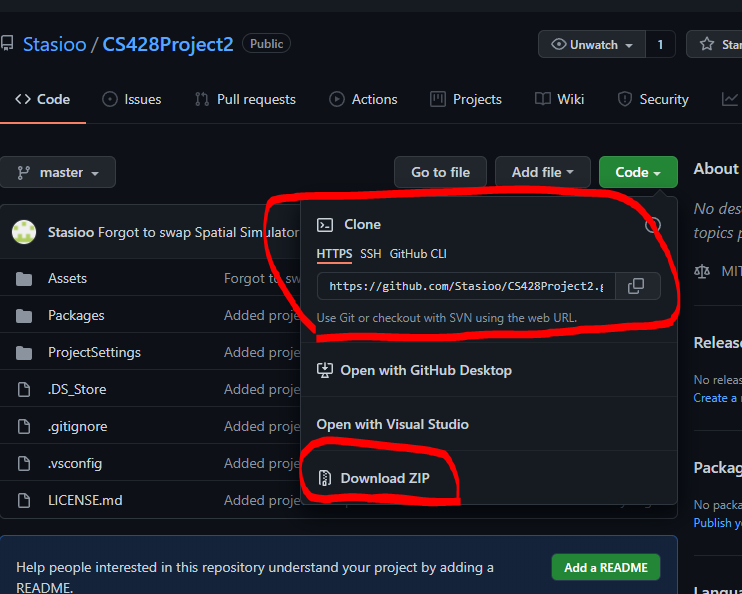
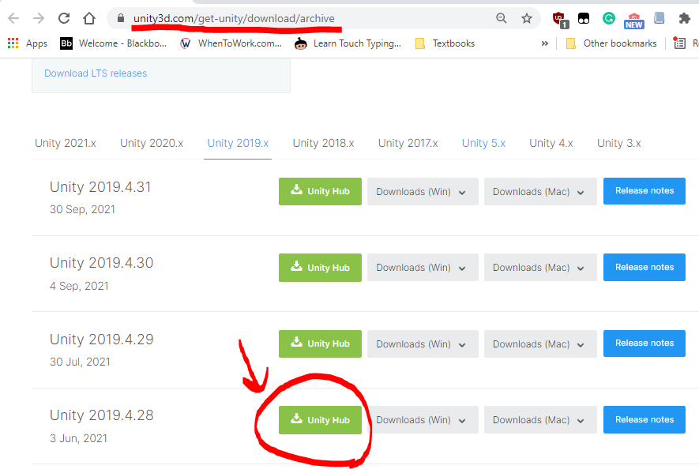
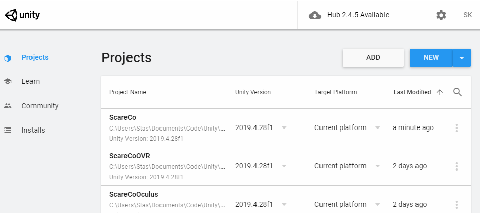
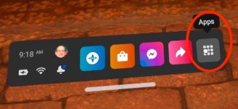
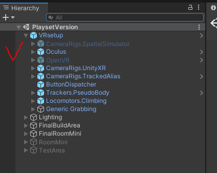
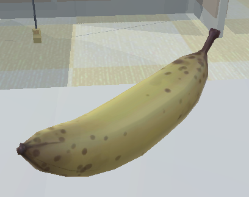
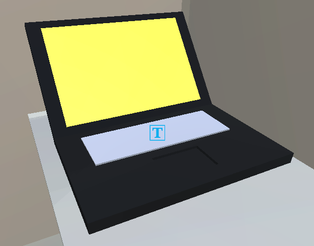

Introduction
With this final project of CS428, we were tasked with creating 3 different versions of our project 2. These 3 different versions of our original project are done in the way of viewing the original office space from different perspectives. So while the core features of the office space remain the same, viewing the space is done differently. Starting off with the first version of the office space, we were to create a child's playset version of it, where the user can take the office space, open the roof, grab elements of the space, move it around, place new ones, and generally play around with it like a playset. Additional features with this version include a lamp you can use to shine over the playset and 2 new figures that the user can mess around with the scene.
The second version of the space is to create a Land of the Giants version, where the user moves around the space as they would normally but they are scaled exactly 1 foot tall, resulting in everything being larger than the user. Within this scene, I gave the user the ability to climb on certain objects such as the computer mouse that is found dangling in various parts of the office. Additional new props/objects were added such as a phone, banana, mechanical pencil, eraser, etc that are scaled normally, allowing the user to pick it up and interact.
The last version of the office space is a version of the space where the user can rotate the world 90-degree increments utilizing a menu, resulting in the walls becoming the floor and the ceiling becoming the walls, etc. Other objects such as props and furniture will result in physically falling around and placed in areas where they originally weren't. Within this space, I allowed the user to pick up things they would normally would and climb certain things when the room gets rotated such as the cubicles and the stairwell.
On top of all the scenes, we were tasked with creating a spatial menu that the user can bring up whenever and allow the user to jump between the different versions of the office space as well as the original.
How to build and run the app
In order to build the app and run it properly, you are going to need several tools installed prior to building it.
This app requires the following (For VRTK, you don't actually have to install anything from the site):
Once you have all of the apps listed above installed, you can now follow these build instructions in order to build this app on your own personal computer:
-

- Starting firstly, open up the GitHub repo link to the application, and either clone repo using git or download the zip file. If you are cloning the repository, utilize the command "git clone https://github.com/Stasioo/CS428Project2.git" in your command terminal in a folder that you would like to keep it. With the zip file, all you have to do is extract the contents to the desired folder. 
- Once you have the project saved on your PC, the next step is to open up Unity Hub. If you do not have Unity V2019.4.28f1 installed, make sure you do that first by going to the Unity archive site and searching for that version, and installed it from there. 
- Once you have that version installed, the next step is to add the project to Unity Hub, which you can do by clicking on the "ADD" button found on the top right under the "Projects" tab. Look for the folder that has the contents of the application. Make sure you are inside the folder containing folders such as Assets, Library, obj, packages, etc. Once you have added it, it will appear in the "Projects" tab of Unity Hub.
- The next step is to open the project, and once you have done that, under the Project Tab found on the bottom left, look under the Assets/Scenes folder, and find the "PlaysetVersion.unity" scene file if that scene isn't currently opened up by default. Also double-check that you have the four necessary scenes within this folder: the "CeilingVersion.unity", the "GiantVersion.unity", the "PlaysetVersion.unity", and the "ScareCoOffices.unity" scene files.
- Now a couple of more checks are needed to make sure the build process will come cleanly. Firstly, we need to make sure Virtual Reality is supported by going under Edit -> Project Settings, it will bring up a new window, and under the Player tab, and under Deprecated Settings that Virtual Reality Supported is ticked off and the Oculus SDK is shown. If not, tick it and press the plus sign to add the Oculus SDK.
- Additionally, you need to make sure you have necessary VRTK packages installed if they weren't in the first place. You can do this by going to your application folder and under the Packages folder and look for the manifest.json file. Opening it in a text editor, double-check to see if you have these lines:
- Additionally, make sure within your Unity Hierarchy, under VRsetup, that CameraRigs.UnityXR is enabled whilst the CameraRigs.SpatialSimulator is disabled. You have to do this for each of the four scenes, or else the app will not be able to run on an Oculus headset.
- Once you have done that, now you can go under the File -> Build Settings to make it. Under the Build Settings window, make sure you have Scenes/ScareCoOffices selected as the scene for the build. Set the Build Platform to be Android so you can deploy it on the Oculus Headset. Once you have switched to that platform. You can either choose to build or Build And Run. If you have the Oculus Quest headset connected via USB cable, it will show up in the list, and you may click on Build and Run. 
- Once you have done that, which may take a while if it's the first time building on the Oculus Quest headset, you may disconnect the USB cable, and use the headset. Whilst using it, go on the application menu, and in the upper right of the big menu, click on all Applications, and at the bottom of the list click on the application to start it.


"io.extendreality.tilia.mutators.collisionignorer.unity": "1.2.7",
"io.extendreality.tilia.camerarigs.spatialsimulator.unity": "1.4.12",
"io.extendreality.tilia.camerarigs.trackedalias.unity": "1.6.6",
"io.extendreality.tilia.camerarigs.unityxr": "1.5.5",
"io.extendreality.tilia.indicators.objectpointers.unity": "1.7.12",
"io.extendreality.tilia.input.unityinputmanager": "1.4.5",
"io.extendreality.tilia.interactions.controllables.unity": "1.13.0",
"io.extendreality.tilia.interactions.interactables.unity": "1.20.1",
"io.extendreality.tilia.interactions.spatialbuttons.unity": "1.3.11",
"io.extendreality.tilia.locomotors.climbing.unity": "1.7.26",
"io.extendreality.tilia.locomotors.teleporter.unity": "1.6.7",
"io.extendreality.tilia.locomotors.teleporttargets.unity": "1.1.11",
"io.extendreality.tilia.trackers.pseudobody.unity": "1.6.22"
If not, add whichever ones that you do not have.


Assets
| Asset Name | Source |
|---|---|
| Banana  |
Link |
| Motorola Phone |
Link |
| Duck tape |
Link |
| Paper Clip |
Link |
| Eraser |
Link |
| Laptop  |
Made it myself in blender |
| Neku |
Link |
| Among Us Astronaut |
Link |
| Mechanical pencil |
Made it myself in blender |
| Dangling Mouse |
Made it myself in blender |
| Binder |
Made it myself in blender |
| Book |
Made it myself in blender |
*Note: I did not list what assets fit the unique model requirement as there is more models that fit this requirement*
*Utilized Silent's Cel Shader for the Neku Outline shader*